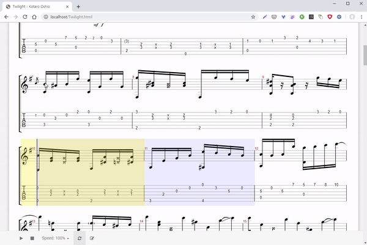
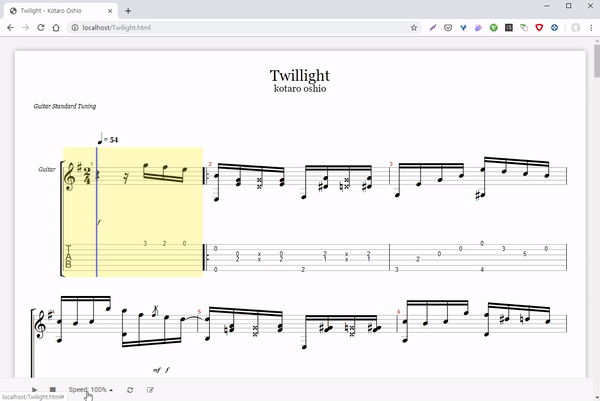
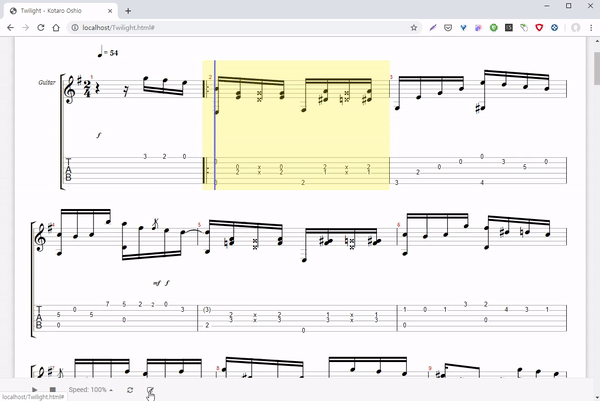

다음과 같은 것들을 할 수 있습니다!
기타 악보
웹에서 기타 악보를 그려서 보여줍니다! 일일히 기타 악보를 출력하거나 악보를 바닥이나 보면대에 놓고 연습할 필요 없이 그저 ㅇㅇㅇ에서 연습하고 싶은 곡을 찾아 선택하기만 하면 됩니다!
기타 반주 재생
기타 악보에 맞춰 반주를 재생할 수 있습니다. 반주를 들으면서 정확한 박자에 맞춰 연습하세요!
반복 재생
악보를 마우스로 드래그해 영역을 지정하고 반복 버튼을 눌러 반복을 활성화시킨 뒤 재생하면 해당 부분을 반복해서 재생할 수 있습니다. 안되는 부분을 계속해서 연습해보세요!


속도 조절
속도가 빨라 연습하기 어려울 때는 하단의 Speed를 조절해 느린 박자로 연습해보세요!
메트로눔
박자를 맞추기 어렵다면 하단의 메트로눔 버튼을 누르세요. 정확한 타이밍을 맞춰줍니다.


업로드
기타 프로파일을 업로드하면 그에 맞는 악보를 그려서 보여주고 반주도 재생할 수 있습니다.